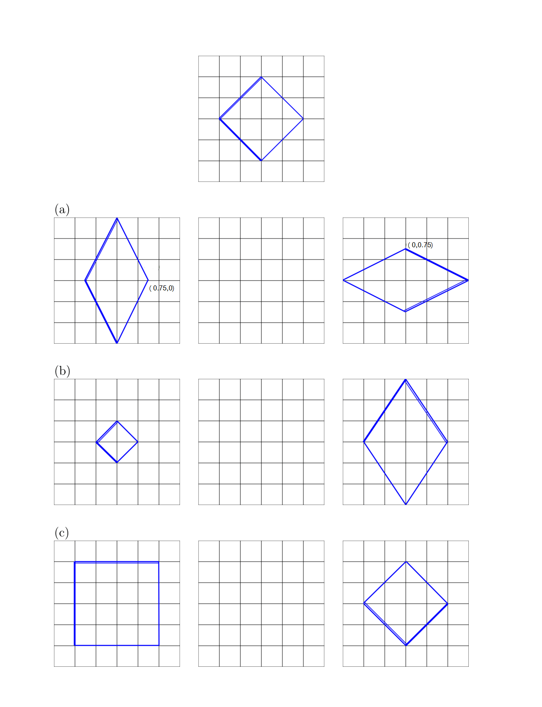

In this assignment, we will explore a common topic in animation: key frame animation. You will solve some written problems (by yourself) to get a better understanding of the underlying theory of animations and then write code to animate scenes using key frames. Key frame animation is a technique wherein we define the layout of a scene at certain times (key frames), and we create frames between them by cleverly interpolating between our defined key frames. This rapid rendering of scenes gives us the illusion of animation. The award winning animation short film Hunger (1974) was one of the first applications of computerized key frame animation. http://bit.ly/1EDvU6R
Written Part
Do this written part alone.
Written Problem 1 - Interpolating in 2D
Below are pictures of a square object (rotated by 45 degrees and with its edges marked so you can tell them apart) under three pairs of linear transformations. Each small cell has size 0.5 (e.g. both vertical and horizontal coordinates range from -1.5 to 1.5). For each pair (keeping in mind that transformations are with respect to initial figure):
Write the 2x2 transformation matrices for each pose; call them \(M_0\) and \(M_1\).
Write the matrix \(M_{0.5}^{lin}\) by linearly interpolating elementwise halfway between \(M_0\) and \(M_1\).
Write each of these two poses in the form \(M_i = R_iS_i\), where \(R_i\) is a rotation and \(S_i\) is a symmetric matrix with positive entries on the diagonal.
Use this decomposition to interpolate a matrix \(M_{0.5}^{pol}\) that is halfway between \(M_0\) and \(M_1\).
Draw the two intermediate states of the object (you can export a PDF and draw on it if you want).

Written Problem 2 - Interpolating 3D Rotations
Be sure to use the egl.math.Quat class to convert between quaternions and rotation matrices.
Write down the quaternion \(q_1\)that corresponds to the identity rotation and the quaternion \(q_2\) that corresponds to a rotation of 180 degrees around the y axis.
Using the formula for spherical linear interpolation, generate the quaternion \(q_3\) that is one-sixth of the way from \(q_1\) to \(q_2\). What are the axis and angle of the rotation \(q_3\) represents?
Convert \(q_3\) to a 3x3 rotation matrix \(M(q_3)\). Verify that starting with the identity and applying this matrix 6 times results in the rotation corresponding to \(q_2\).
Programming Part
Do this programming part alone or in groups of two, as you prefer.
Problem 1: Keyframe Animation
Getting Started
For the programming assignment, we will implement the primary features of a keyframe animation framework. A new commit has been pushed to the class Github page in the master branch. We recommend switching to your master branch, pulling this commit, and creating a new branch (e.g. A6 solution) and committing your work there. This new commit contains all the framework changes and additions necessary for this project. For this project, we use lwjgl, so you may need to update some settings of your build to have this external library work properly. We have included the correct jar files, but you may need to configure your native library location. To do this in Eclipse, go to Project -> Properties -> Java Build Path -> Select Libraries -> Select the lwjgl Drop Down Menu -> Modify Native Library Location. Modify this setting so that it matches your OS.
We have added a framework in the package anim that stores keyframes and provides an interface for editing them; you will build on that framework and implement a few main features that enable correct interpolation of animations between keyframes.
The Interface
At first glance, your window may not look like the one in the picture. Hover over the bottom of the window to reveal the timeline, complete with highlighted keyframes. We have implemented a keyboard based animation interface:
Moving between frames: [ ]
We use the [ and ] keys to move to the left and right keyframes.
Adding a frame: To add a keyframe at the current frame, press the n key. The new keyframe will be initialized to the current state of the scene when you clicked the button.
Editing a keyframe: To edit a keyframe, navigate to that keyframe, edit the transformations at that state, and press n.
Removing a keyframe: Navigate to a keyframe and press the m key to remove a key frame.
Playing and pausing the animation: The \ key is used to play or pause the animation.
Changing the method of rotation: The / key is used to alternate between three methods of rotation.
Keyframes
For this problem, we have extended the scene graph system to store information about the transformations of each object at multiple keyframes. This information is managed by the AnimationEngine, which keeps an AnimationTimeline for each animated object in the scene. The animation data is stored in the AnimationTimelines, each of which contains:
A TreeSet of AnimKeyFrame. Each key frame contains a frame index number and a 4 x 4 matrix transformation.
A SceneObject that this timeline operates on.
Every time the update loop is called in the Game loop, AnimationEngine.updateTransformations is called. For each timeline, this method computes the transformation for the current time and send a transformation-update event to the corresponding SceneObject.
We have already implemented the functionality of adding and deleting keyframes, so these data structures are already set up.
What You Will Do
Implement void updateTransformations() -
A method that iterates through all the animation timelines, and calls sendEvent on the scene with the correct interpolated transformation on the object. For example, if the object on the AnimTimeline is called object, then scene.sendEvent(new SceneTransformationEvent(object)); has the effect of notifying the framework that object now has a new transformation.
Create Interesting Animation -
After completing this short coding assignment, use one of the included scenes to create an interesting animation. This should showcase all of your working transformations (rotation, scaling, and translation). Screen capture your animation and include this video in your submission.
Create Buggy Animation -
After you have implemented the three methods of rotation use one of the included scenes to demonstrate a "bug" with using Euler angles to interpolate rotations, and then show how using a spherical linear interpolation between quaternions resolves the issue. Screen capture your animation and include this video in your submission.
Interpolation Overview
Naive Approach
When computing the interpolation of two transformations, the naive approach is to linearly interpolate each of the 12 free values of the 4 x 4 matrix. You may want to try this out and see why this doesn’t work so well. See what happens when you rotate an object 180 degrees!
The more accurate approach
Linearly interpolating rotations by value does not work very well. While scales and translations can be linearly interpolated to give good results, the same doesn’t apply to rotations. So what can we do? It turns out there is a good way to interpolate between two pure rotations: first express the rotations as quaternions, then use a method called slerp, or spherical linear interpolation, to interpolate between the quaternions. Therefore, the general idea for a more accurate interpolation is:
Decompose the surrounding 4x4 matrix transformations around the current key frame into rotations, translations, and scales.
Linearly interpolate the translations and scales, and interpolate the rotations by converting to quaternions, slerping, and then converting the result back to a rotation matrix.
Recompose the constituents to give a transformation for the current frame.
Decomposing transformations
A homogenous transformation M is a 4x4 matrix that can be decomposed firstly as follows
\[
\begin{pmatrix}
RS & T \\
0 & 1 \\
\end{pmatrix}
\]
Here, \(T\) represents the translation, \(R\) the rotation and \(S\) the scale. So just how do we decompose the upper left 3x3 portion of the matrix into its constituents? Polar decomposition. We have conveniently written the egl.math.Matrix3.polar_decomp function for you. There is more about quaternions, spherical linear interpolation, and the polar decomposition, in the Animation lecture slides and notes, and in Chapter 17 of the textbook.
Slerp
Spherical linear interpolation occurs between quaternions, so we need to convert our representation of \(R\) as a 3 x 3 matrix into a quaternion for each keyframe, and then convert the interpolated quaternion back to a matrix.
Converting between Rotation Matrices and Quaternions
We do not ask you to implement the inter-conversion between rotation matrices and Quaternions. You can use the class egl.math.Quat to convert from a rotation matrix (using the appropriate Quat constructor) and to a rotation matrix (using the toRotationMatrix method). Feel free to look at the code to understand how it works if you’re interested. All you need to know about Quaternions is that they are 4-vectors, and that unit-length quaternions, called unit quaternions, can represent 3D rotations and also interpolate them well. If you want to learn more, take CS 5625 next time it's offered!
Linear Interpolation
Typically, we visualize quaternions as vectors that represent rotation. Yes, they have 4 numbers, but as most things with higher dimensionality, imagine them to be in a lower dimensional space, say 2D, and say “four” to yourself. Given two quaternions \(q_1\) and \(q_2\), and a \(t\) to interpolate such that \(0 < t < 1\), a linear interpolation, or lerp, q is given by:
\[
q = (1 - t)q_1 + tq_2
\]
This will work, if we normalize the interpolated quaternion so that it’s a unit quaternion again, but unfortunately the rotation does not happen at constant speed—it will go faster towards t=0.5 and slower towards the ends.
Spherical Linear Interpolation
Intuitively, spherical linear interpolation, or slerp, gets around this problem by interpolating these quaternions (read: vectors) along the sphere they are both a part of. We’ll avoid the details of the derivation of the slerp formula, which are in the lecture slides. Let’s just review how slerp is calculated. Given quaternions \(q_1\) and \(q_2\) at the surrounding key frames and an interpolation ratio \(t\) such that \(0 < t < 1\), we first calculate the angle between \(q_1\) and \(q_2\), called \(\Omega\), as follows:
\[
cos\Omega = q_1 \cdot q_2
\]
Then the interpolated quaternion q is given by
\[
q = \frac{sin(\Omega - t\Omega)}{sin\Omega}q_1 + \frac{sin(t\Omega)}{sin\Omega}q_2
\]
We have implementated this in the egl.math.Quat.slerp function for you as well.
Interpolation Modes
Our framework supports three different interpolation modes: Euler angles, Linear interpolation of quaternions, and spherical linear interpolation of quaternions. You will need to support all three of these in the function updateTransformations(). The mode currently selected is indicated by the field rotationMode, and can be changed by the user. We have described the latter two modes in detail above. In order to implement Euler angles, you will need to decompose the rotation matrices into Euler angles (using a function we have provided), linearly interpolate, and then recompose into a rotation matrix (you will find useful Matrix3 functions for this).
Demo Video
This short video shows what to expect after correctly completing the coding portion of the assignment.
What to Submit
Submit a zip file containing:
Your solution organized the same way as the code on CMS. Please include your .classpath and .project in the submission as well as all the pre-existing files in the codebase, and not merely your modified files.